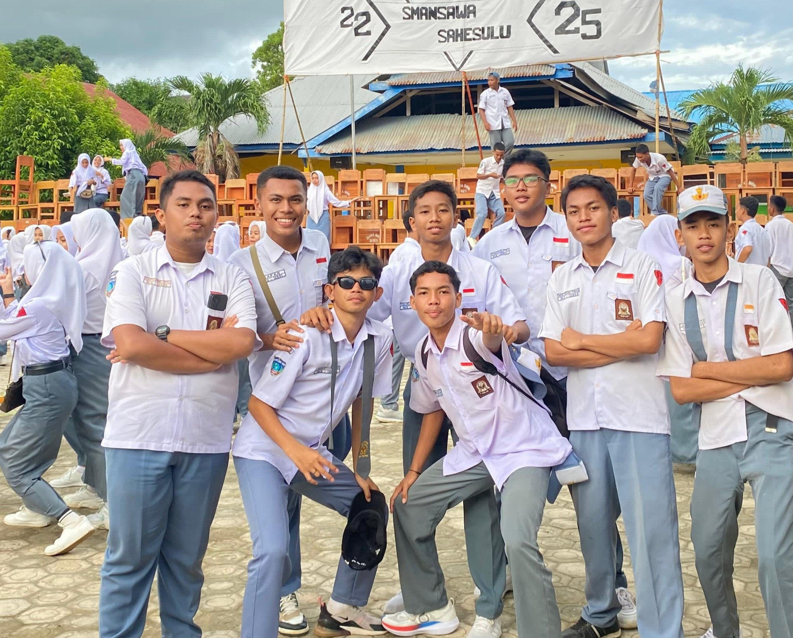

×

"Setiap foto menyimpan cerita yang tak terlupakan"
Tiga tahun penuh suka, duka, tawa, dan air mata. Bersama kita ukir cerita terindah.
Klik foto untuk melihat cerita di baliknya
Cerita yang tertulis dalam setiap momen
Website ini dibuat untuk mengabadikan momen-momen indah selama masa SMA. Setiap foto memiliki cerita dan kenangan yang tak ternilai harganya.
Dari hari pertama masuk hingga saat kelulusan, perjalanan ini mengajarkan kami arti persahabatan, perjuangan, dan impian.

Kamu juga bisa berbagi cerita dan fotomu di sini